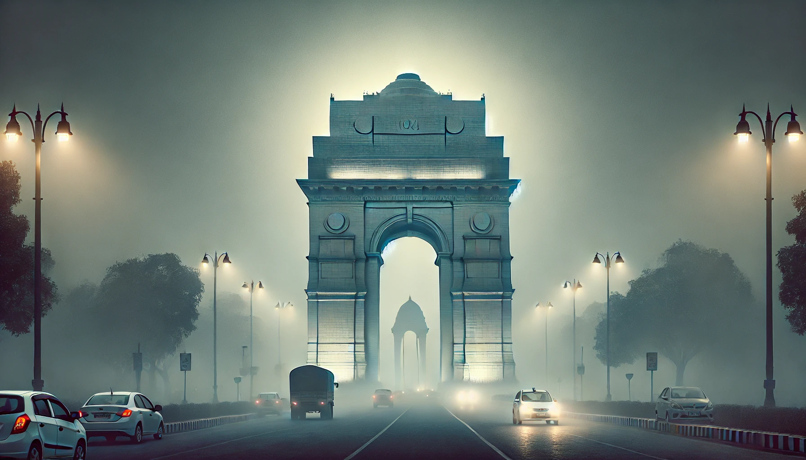

As electric two-wheeler exports touch 1.4 million, new entrants hope domestic consumption increases export possibilities
With India leading in electric three-wheelers and ranking second in electric two-wheeler ownership globally, experts are urging the nation to focus on electric passenger cars to tackle pollution and unlock new export opportunities
India, the third-largest automobile market in the world, has almost three million electric vehicles on its roads. That is twice the number of EVs in the UK and almost the same as in the US. Although China, India’s immediate neighbour, has 20 million.
What makes India different when it comes to electric vehicles is that most of its EVs are two and three-wheelers.
It is already the country with the largest number of electric three-wheelers, a mode of transport popular in South and Southeast Asia. India is now pushing its population towards electric passenger cars and wants to increase EV ownership to eventually have the capacity to export them.
Lizbeth Godwin, from the Centre for Public Policy Research, says that in the last five years, government-led incentives for electric public transport encouraged the switch of autorickshaws, buses and taxis to electric vehicles. “The EV policies formulated by various states have led to a rise in the number of EV sales. There is incentive involved. But there is delay in acquisition in some places because insurance costs for these vehicles discourage buying,” says Godwin.
According to Neil Shah, founder of Counterpoint Research, this could address another problem that India is battling – pollution. The capital, New Delhi, has the most EVs per capita (13 EVs for every 100 people) in the country. It is also the most polluted capital in the world. Of the 233,000 electric vehicles in the city, only 8000 are private cars. This is a microcosm of the national problem and its solution existing at the same time.
This transition has already given Delhi the third-largest e-bus fleet in the world. Godwin says India, if it wants to build a credible alternative to China’s manufacturing heft, has to manufacture for its own market first. “A favourable policy environment, including subsidies from both the central and state governments to reduce capital costs, as well as reductions or exemptions from registration fees, road taxes, and permit requirements, are among the many factors which could propel the rapid adoption of EVs,” says Godwin.
Since 2015, the country has more than doubled its expenditure on manufacturing electric vehicles, from 14 to 33 million in 2020. In 2016, India had exported 1.2 million passenger vehicles. This came down to 500,000 thousand in 2020 from 900,000 in 2019, primarily due to the pandemic induced manufacturing crunch.
The country plans for a 30% EV penetration target by 2030. But the possibility of this happening depends on a better network of charging points. India currently has 200 EVs for each charging station, compared to 20 in the US and 10 in China.
Add to that, the cost of high-end electric vehicles can burn a hole in the consumer’s pocket. The average budget to buy a car in an Indian household is approximately 5,500 GBP. This is lower than the price of the most popular EV in the country - TATA Tiago, which costs around 7000 GBP.
Tesla, the American EV giant, has reportedly backtracked from its plans to manufacture in India because it does not see a domestic market there yet.
“Currently, Tesla does not offer any models even in the $25,000 price range, which would be more suitable for Indian consumers who are not price conscious,” says Shah. Shah worked with the government of India in its EV manufacturing plan. He adds that India can be used as a manufacturing hub to supply left-hand drive cars to markets like Japan, Thailand, the UK, Australia, and Indonesia.
Despite these challenges in attracting international players, Gowdin suggests India’s population should be incentive enough for companies to start manufacturing for its domestic market. However, the country’s infrastructural capacity pose a challenge to this adoption. She argues that more electric vehicles on the road should not be the final goal.
“Our ultimate aim should be reducing cars on roads rather than providing a scope for 'clean congestion'. The focus should be on nudging people to use more public transport.”